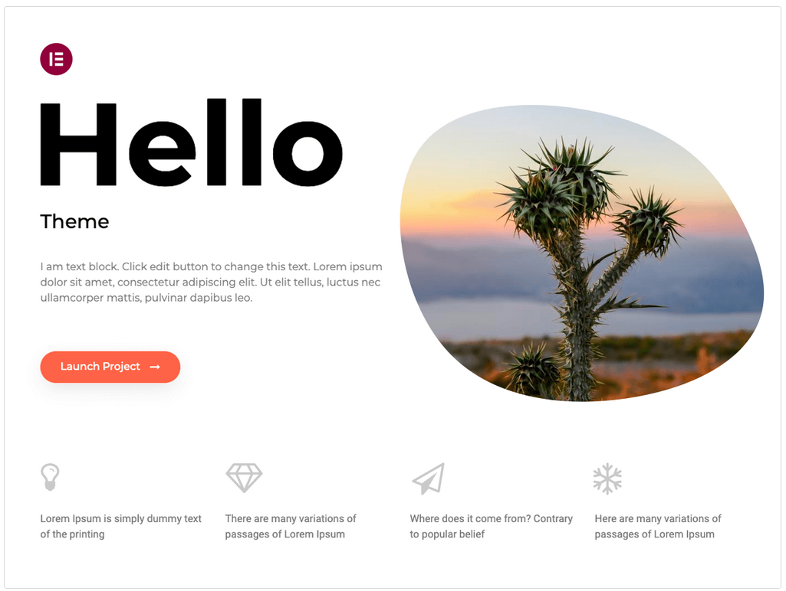
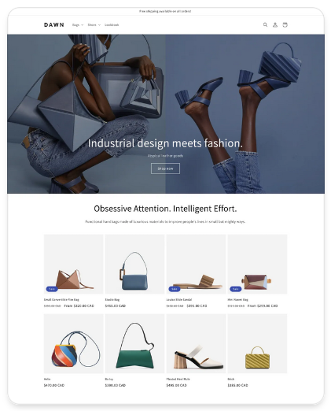
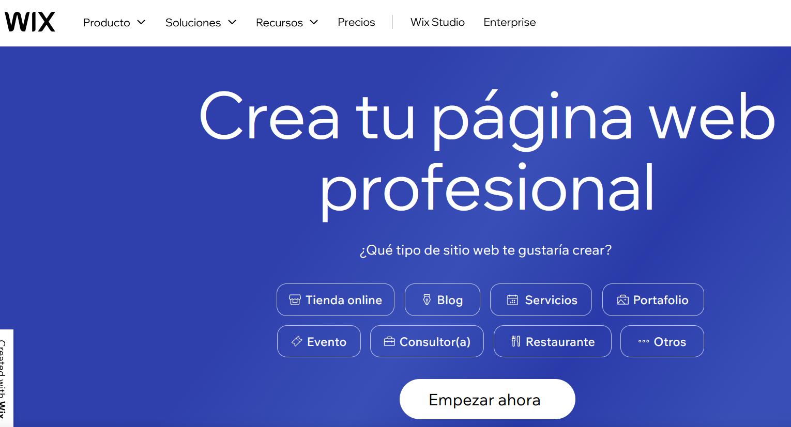

Gestors de continguts¶
Content Management System (CMS) = Sistema de Gestió de Continguts.
Un CMS és una aplicació instal·lada sobre un servidor web que permet crear, administrar i gestionar llocs web de manera senzilla, àgil i efectiva sense la necessitat de tenir grans coneixements informàtics.
El mercat del gestors de continguts¶
En el mercat hi ha una multitud de CMS, tant de codi obert i gratuïts, com de programari comercial i privatiu.
Classificació segons el tipus de llicència:
- GPL: llicència per programari lliure o de codi obert que ens permet utilitzar, modificar, copiar i redistribuir de forma lliure les aplicacions. Les aplicacions sota aquesta llicència poden ser o no gratuïtes.
- Privatives: llicència per codi tancat que no ens permet ni modificar, ni copiar aquest codi. Les aplicacions sota aquesta llicència sempre són de pagament.
- Freeware: amb aquesta llicència no es pot modificar el codi font d’una aplicació però si fer servir de manera gratuïta.
- Shareware: amb aquesta llicència es poden fer servir gratuïtament les aplicacions, però amb restriccions en les funcionalitats, temps d’ús, rols, etc.
Classificació segons el seu propòsit:
- General: per crear llocs web de qualsevol temàtica.
- e-commerce: per crear llocs web de comerç electrònic.
- e-learning: per crear llocs web d’ensenyament o aprenentatge.
- Blogs: per crear blogs.
- Wikis: per crear wikis.
CMS en w3techs.com¶
{kind=link}
El 28,6% dels llocs web no utilitzen cap sistema de gestió de continguts. El 43,2% de tots els llocs web utilitzen WordPress i representa una quota de mercat de sistemes de gestió de continguts del 60,5%.
CMS populars¶
-
WordPress (wordpress.org). És el CMS més popular, tant pel que fa al seu ús com a la quota de mercat. Va començar com a CMS per crear blogs, però actualment el podem classificar de propòsit general, ja que també ens permet crear llocs web de qualsevol temàtica. Té llicència GPL, disposant d’una versió gratuïta i una altra de pagament que ens permet instal·lar-lo dins del seu servidor. Entre els principals avantatges de WordPress estan:
- La seua senzillesa d’ús.
- La gran quantitat d’opcions de personalització tant en l’àmbit funcional com d’estil.
- És el gestor de continguts amb major contingut de tercers. Hi ha plugins de WordPress per a gairebé tot, la qual cosa permet personalitzar les funcions d’un lloc web de forma gairebé il·limitada.
- Disposa d’una gran quantitat de dissenys i temes que podem modificar.
- Està preparat per a millorar el posicionament mitjançant SEO.
- Disposa de continguts adaptables per a dispositius mòbils.
SEO són les sigles de Search Engine Optimization o posicionament en cercadors i fan referència al procés de millorar de la visibilitat d’un lloc web en els resultats de cerca dels diferents cercadors.

{kind=link}
- Shopify (www.shopify.com). Permet crear llocs web de comerç electrònic i té llicència freeware, amb la qual cosa només es disposen de catorze dies de prova, a partir d’aquest moment s’ha d’adquirir un pla mensual, si no, tot el que es puga haver fet quedarà pausat i no es podrà continuar treballant en el lloc web fins a l’adquisició d’un pla mensual. Ofereix complet control sobre l’aparença dels llocs web que es vulguin crear, des del disseny fins al contingut i els colors.

{kind=link}
- Wix (www.wix.com). Wix no és un CMS, sinó un creador de llocs web. Els creadors de llocs web com Wix et permeten fer una pàgina web mitjançant un editor visual, amb el qual només has de moure blocs de contingut sense necessitat de saber programar. Permet crear llocs webs, llocs adaptats a mòbils i pàgines de Facebook amb tecnologia HTML 5 de manera gratuïta o de pagament mitjançant una plataforma online.

{kind=link}